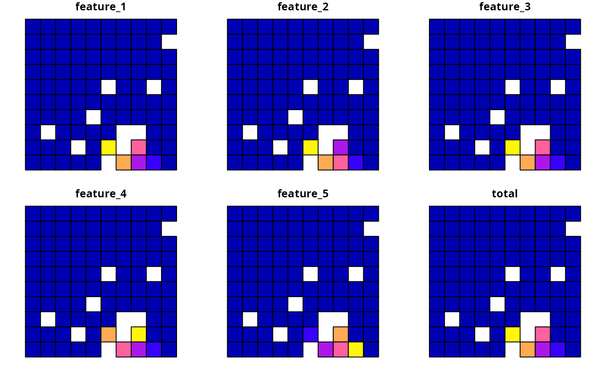
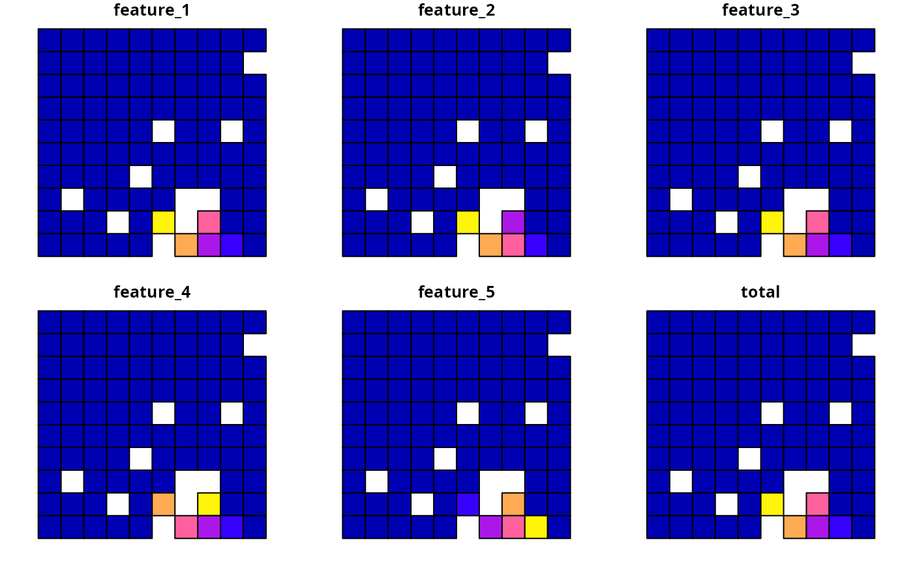

Evaluate solution importance using Ferrier scores
Source:R/eval_ferrier_importance.R
eval_ferrier_importance.RdCalculate importance scores for planning units selected in a solution following Ferrier et al. (2000).
Arguments
- x
problem()object.- solution
numeric,matrix,data.frame,terra::rast(), orsf::sf()object. The argument should be in the same format as the planning unit cost data in the argument tox. See the Solution format section for more information.
Value
A matrix, tibble::tibble(),
terra::rast(), or sf::st_sf() object containing the scores for each
planning unit selected in the solution.
Specifically, the returned object is in the
same format (except if the planning units are a numeric vector) as the
planning unit data in the argument to x.
Details
Importance scores are reported separately for each feature within each planning unit. Additionally, a total importance score is also calculated as the sum of the scores for each feature. Note that this function only works for problems that use targets and a single zone. It will throw an error for problems that do not meet these criteria.
Notes
In previous versions, the documentation for this function had a warning indicating that the mathematical formulation for this function required verification. The mathematical formulation for this function has since been corrected and verified, so now this function is recommended for general use.
Solution format
Broadly speaking, the argument to solution must be in the same format as
the planning unit data in the argument to x.
Further details on the correct format are listed separately
for each of the different planning unit data formats:
xhasnumericplanning unitsThe argument to
solutionmust be anumericvector with each element corresponding to a different planning unit. It should have the same number of planning units as those in the argument tox. Additionally, any planning units missing cost (NA) values should also have missing (NA) values in the argument tosolution.xhasmatrixplanning unitsThe argument to
solutionmust be amatrixvector with each row corresponding to a different planning unit, and each column correspond to a different management zone. It should have the same number of planning units and zones as those in the argument tox. Additionally, any planning units missing cost (NA) values for a particular zone should also have a missing (NA) values in the argument tosolution.xhasterra::rast()planning unitsThe argument to
solutionbe aterra::rast()object where different cells correspond to different planning units and layers correspond to a different management zones. It should have the same dimensionality (rows, columns, layers), resolution, extent, and coordinate reference system as the planning units in the argument tox. Additionally, any planning units missing cost (NA) values for a particular zone should also have missing (NA) values in the argument tosolution.xhasdata.frameplanning unitsThe argument to
solutionmust be adata.framewith each column corresponding to a different zone, each row corresponding to a different planning unit, and cell values corresponding to the solution value. This means that if adata.frameobject containing the solution also contains additional columns, then these columns will need to be subsetted prior to using this function (see below for example withsf::sf()data). Additionally, any planning units missing cost (NA) values for a particular zone should also have missing (NA) values in the argument tosolution.xhassf::sf()planning unitsThe argument to
solutionmust be asf::sf()object with each column corresponding to a different zone, each row corresponding to a different planning unit, and cell values corresponding to the solution value. This means that if thesf::sf()object containing the solution also contains additional columns, then these columns will need to be subsetted prior to using this function (see below for example). Additionally, the argument tosolutionmust also have the same coordinate reference system as the planning unit data. Furthermore, any planning units missing cost (NA) values for a particular zone should also have missing (NA) values in the argument tosolution.
References
Ferrier S, Pressey RL, and Barrett TW (2000) A new predictor of the irreplaceability of areas for achieving a conservation goal, its application to real-world planning, and a research agenda for further refinement. Biological Conservation, 93: 303–325.
See also
See importance for an overview of all functions for evaluating the importance of planning units selected in a solution.
Other importances:
eval_rank_importance(),
eval_rare_richness_importance(),
eval_replacement_importance()
Examples
# \dontrun{
# seed seed for reproducibility
set.seed(600)
# load data
sim_pu_raster <- get_sim_pu_raster()
sim_pu_polygons <- get_sim_pu_polygons()
sim_features <- get_sim_features()
# create minimal problem with binary decisions
p1 <-
problem(sim_pu_raster, sim_features) %>%
add_min_set_objective() %>%
add_relative_targets(0.1) %>%
add_binary_decisions() %>%
add_default_solver(gap = 0, verbose = FALSE)
# solve problem
s1 <- solve(p1)
# print solution
print(s1)
#> class : SpatRaster
#> size : 10, 10, 1 (nrow, ncol, nlyr)
#> resolution : 0.1, 0.1 (x, y)
#> extent : 0, 1, 0, 1 (xmin, xmax, ymin, ymax)
#> coord. ref. : Undefined Cartesian SRS
#> source(s) : memory
#> varname : sim_pu_raster
#> name : layer
#> min value : 0
#> max value : 1
# plot solution
plot(s1, main = "solution", axes = FALSE)
 # calculate importance scores using Ferrier et al. 2000 method
fs1 <- eval_ferrier_importance(p1, s1)
# print importance scores,
# each planning unit has an importance score for each feature
# (as indicated by the column names) and each planning unit also
# has an overall total importance score (in the "total" column)
print(fs1)
#> class : SpatRaster
#> size : 10, 10, 6 (nrow, ncol, nlyr)
#> resolution : 0.1, 0.1 (x, y)
#> extent : 0, 1, 0, 1 (xmin, xmax, ymin, ymax)
#> coord. ref. : Undefined Cartesian SRS
#> source(s) : memory
#> varnames : sim_pu_raster
#> sim_pu_raster
#> sim_pu_raster
#> ...
#> names : feature_1, feature_2, feature_3, feature_4, feature_5, total
#> min values : 0.000000000, 0.000000000, 0.000000000, 0.000000000, 0.000000000, 0.00000000
#> max values : 0.003472042, 0.003596401, 0.003341572, 0.003768489, 0.003504223, 0.01641719
# plot total importance scores
plot(fs1, main = names(fs1), axes = FALSE)
# create minimal problem with polygon planning units
p2 <-
problem(sim_pu_polygons, sim_features, cost_column = "cost") %>%
add_min_set_objective() %>%
add_relative_targets(0.05) %>%
add_binary_decisions() %>%
add_default_solver(gap = 0, verbose = FALSE)
# solve problem
s2 <- solve(p2)
# print solution
print(s2)
#> Simple feature collection with 90 features and 4 fields
#> Geometry type: POLYGON
#> Dimension: XY
#> Bounding box: xmin: 0 ymin: 0 xmax: 1 ymax: 1
#> Projected CRS: Undefined Cartesian SRS
#> # A tibble: 90 × 5
#> cost locked_in locked_out solution_1 geometry
#> * <dbl> <lgl> <lgl> <dbl> <POLYGON [m]>
#> 1 216. FALSE FALSE 0 ((0 1, 0.1 1, 0.1 0.9, 0 0.9, 0 1))
#> 2 213. FALSE FALSE 0 ((0.1 1, 0.2 1, 0.2 0.9, 0.1 0.9, 0.1 …
#> 3 207. FALSE FALSE 0 ((0.2 1, 0.3 1, 0.3 0.9, 0.2 0.9, 0.2 …
#> 4 209. FALSE TRUE 0 ((0.3 1, 0.4 1, 0.4 0.9, 0.3 0.9, 0.3 …
#> 5 214. FALSE FALSE 0 ((0.4 1, 0.5 1, 0.5 0.9, 0.4 0.9, 0.4 …
#> 6 214. FALSE FALSE 0 ((0.5 1, 0.6 1, 0.6 0.9, 0.5 0.9, 0.5 …
#> 7 210. FALSE FALSE 0 ((0.6 1, 0.7 1, 0.7 0.9, 0.6 0.9, 0.6 …
#> 8 211. FALSE TRUE 0 ((0.7 1, 0.8 1, 0.8 0.9, 0.7 0.9, 0.7 …
#> 9 210. FALSE FALSE 0 ((0.8 1, 0.9 1, 0.9 0.9, 0.8 0.9, 0.8 …
#> 10 204. FALSE FALSE 0 ((0.9 1, 1 1, 1 0.9, 0.9 0.9, 0.9 1))
#> # ℹ 80 more rows
# plot solution
plot(s2[, "solution_1"], main = "solution")
# calculate importance scores using Ferrier et al. 2000 method
fs1 <- eval_ferrier_importance(p1, s1)
# print importance scores,
# each planning unit has an importance score for each feature
# (as indicated by the column names) and each planning unit also
# has an overall total importance score (in the "total" column)
print(fs1)
#> class : SpatRaster
#> size : 10, 10, 6 (nrow, ncol, nlyr)
#> resolution : 0.1, 0.1 (x, y)
#> extent : 0, 1, 0, 1 (xmin, xmax, ymin, ymax)
#> coord. ref. : Undefined Cartesian SRS
#> source(s) : memory
#> varnames : sim_pu_raster
#> sim_pu_raster
#> sim_pu_raster
#> ...
#> names : feature_1, feature_2, feature_3, feature_4, feature_5, total
#> min values : 0.000000000, 0.000000000, 0.000000000, 0.000000000, 0.000000000, 0.00000000
#> max values : 0.003472042, 0.003596401, 0.003341572, 0.003768489, 0.003504223, 0.01641719
# plot total importance scores
plot(fs1, main = names(fs1), axes = FALSE)
# create minimal problem with polygon planning units
p2 <-
problem(sim_pu_polygons, sim_features, cost_column = "cost") %>%
add_min_set_objective() %>%
add_relative_targets(0.05) %>%
add_binary_decisions() %>%
add_default_solver(gap = 0, verbose = FALSE)
# solve problem
s2 <- solve(p2)
# print solution
print(s2)
#> Simple feature collection with 90 features and 4 fields
#> Geometry type: POLYGON
#> Dimension: XY
#> Bounding box: xmin: 0 ymin: 0 xmax: 1 ymax: 1
#> Projected CRS: Undefined Cartesian SRS
#> # A tibble: 90 × 5
#> cost locked_in locked_out solution_1 geometry
#> * <dbl> <lgl> <lgl> <dbl> <POLYGON [m]>
#> 1 216. FALSE FALSE 0 ((0 1, 0.1 1, 0.1 0.9, 0 0.9, 0 1))
#> 2 213. FALSE FALSE 0 ((0.1 1, 0.2 1, 0.2 0.9, 0.1 0.9, 0.1 …
#> 3 207. FALSE FALSE 0 ((0.2 1, 0.3 1, 0.3 0.9, 0.2 0.9, 0.2 …
#> 4 209. FALSE TRUE 0 ((0.3 1, 0.4 1, 0.4 0.9, 0.3 0.9, 0.3 …
#> 5 214. FALSE FALSE 0 ((0.4 1, 0.5 1, 0.5 0.9, 0.4 0.9, 0.4 …
#> 6 214. FALSE FALSE 0 ((0.5 1, 0.6 1, 0.6 0.9, 0.5 0.9, 0.5 …
#> 7 210. FALSE FALSE 0 ((0.6 1, 0.7 1, 0.7 0.9, 0.6 0.9, 0.6 …
#> 8 211. FALSE TRUE 0 ((0.7 1, 0.8 1, 0.8 0.9, 0.7 0.9, 0.7 …
#> 9 210. FALSE FALSE 0 ((0.8 1, 0.9 1, 0.9 0.9, 0.8 0.9, 0.8 …
#> 10 204. FALSE FALSE 0 ((0.9 1, 1 1, 1 0.9, 0.9 0.9, 0.9 1))
#> # ℹ 80 more rows
# plot solution
plot(s2[, "solution_1"], main = "solution")
 # calculate importance scores
fs2 <- eval_ferrier_importance(p2, s2[, "solution_1"])
# plot importance scores
plot(fs2)

# }
# calculate importance scores
fs2 <- eval_ferrier_importance(p2, s2[, "solution_1"])
# plot importance scores
plot(fs2)

# }